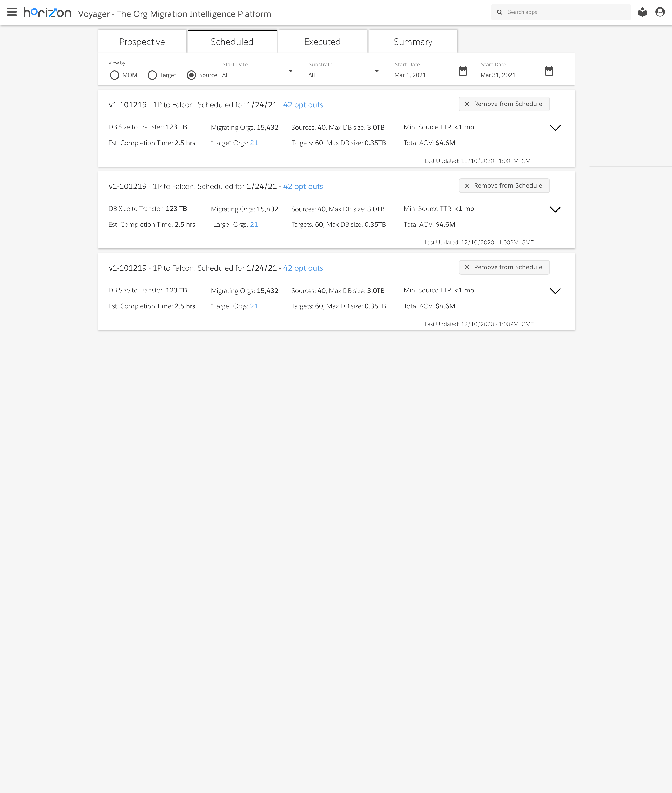

1. Defining the Problem
30 million users worldwide on Salesforce are invited not only to make full use of Salesforce and its acquisitions, but to write their own code within Salesforce's ecosystem.
Central to Salesforce's value proposition is trust. Customers expect any code, data, and user activity taking place on Salesforce's cloud to be fully performant, reliable, secure, and compliant with any local regulations.
As a result, teams of cloud capacity analysts, known as capacity planners, focus on ensuring plenty of cloud resources are available to each customer, in a cost effective manner. Doing so means continuously migrating customers off of 'hot' or highly-utilized cloud environments to 'cool,' less-utilized environments.
As the customer base continued to grow, it became increasingly difficult for capacity planners to quickly and effectively identify 'hot' environments, and more importantly, the ideal 'cooler' environments for customers to migrate to. Timeliness is key here, as migrating a given customer requires a workflow of verification, testing, migration prep, and sometimes legal considerations.
Essentially, 'cool' environments need to be found quickly so that customers can migrate before their environments get to 'hot.'
Having gained a thorough understanding of this problem, my team and I began with the following questions, "What information do capacity planners need to effectively identify the 'hot' environments from which to migrate customers, and to which 'cool' environments can these customers migrate?" And, from a visual design perspective, "How can we best display this information so that capacity planners can make these migration decisions in time?"
With these questions in mind, we worked with capacity planning teams to first establish a user journey that fit within their requirements and constraints for effective migration planning.
2. Fast-Iterating Wireframes
Based on the problem defined and the 'ideal' user journey developed in partnership with capacity planning, we began iterating quickly over simple wireframes. These wireframes were meant to demonstrate what a data product might show, in what way, at each stage of the user journey.
This wireframing exercise was particularly valuable at this stage, as in addition to speed to delivery, wireframes offer the advantage of focusing the conversation on features, functionality, and layout, without getting bogged down in styling and other cosmetic elements too early in the process.
3. Hi-fi Interactive Prototyping
After several wireframe iterations, we had the buy-in we needed to invest in hi fidelity prototypes. These both gave our users a real world sense of how these dashboards would look and feel in production, and supplied our own engineering team with pixel-perfect specs for front-end implementation.
